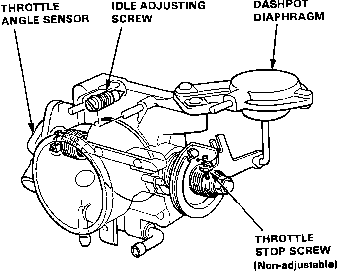

Idle Speed: Locations
Air Intake System:

AIR CLEANER
The Air Cleaner is housed in a plastic Air Cleaner assembly. It is located forward of the right front shock tower on the right side of the engine compartment.
DASHPOT
The Dashpot is located on the side of the throttle body assembly near the throttle cable attachment point. See "THROTTLE BODY" for more detailed information.
AIR INTAKE TUBE
Intake Air Hoses are mounted in the engine compartment at various locations. Starting near the left headlight area, continuing across the top of the radiator, and over to the right side fender and shock tower. From that point it goes to the rear of the engine compartment where it connects to the throttle body assembly.
RESONATOR
The Resonator is located in the intake air hose. It is forward and below the air cleaner assembly beside the right headlight.
THROTTLE CABLE
The Throttle Cable is located in the engine compartment. It has one end attached to the upper left firewall area and the other end to the throttle body assembly of the intake manifold.
Throttle Body:

THROTTLE BODY AND COMPONENTS
The Throttle Body is located on the intake manifold. Mounted between the intake air tube and the intake manifold inlet.
Engine Management Components:

AIR BOOST VALVE
The Air Boost Valve is mounted on the front side of the intake manifold, just to the right of the dashpot.
FAST IDLE VALVE
The Fast Idle Valve is located under the throttle body assembly at the intake manifold inlet.